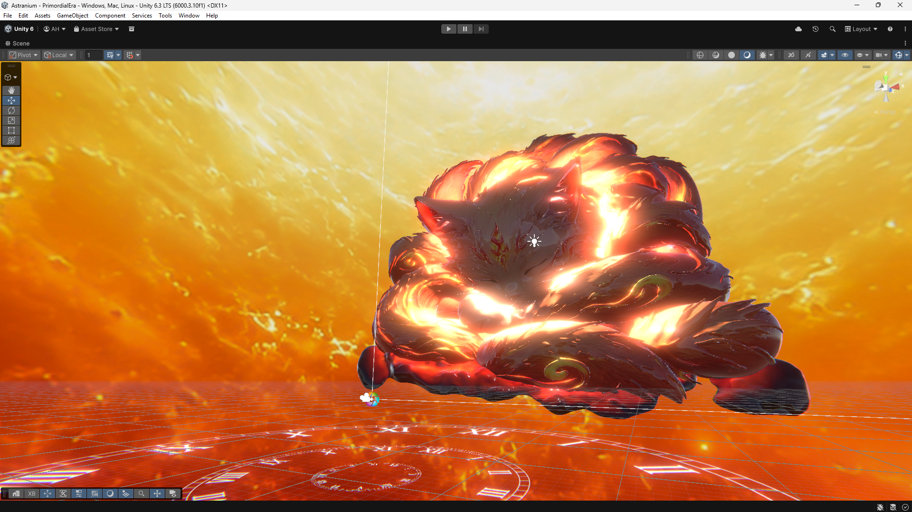
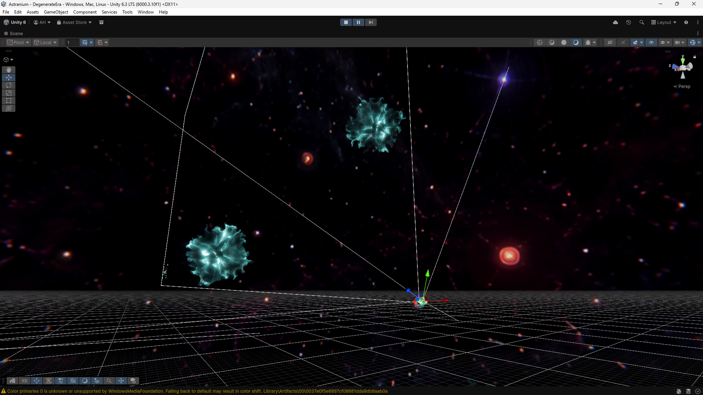
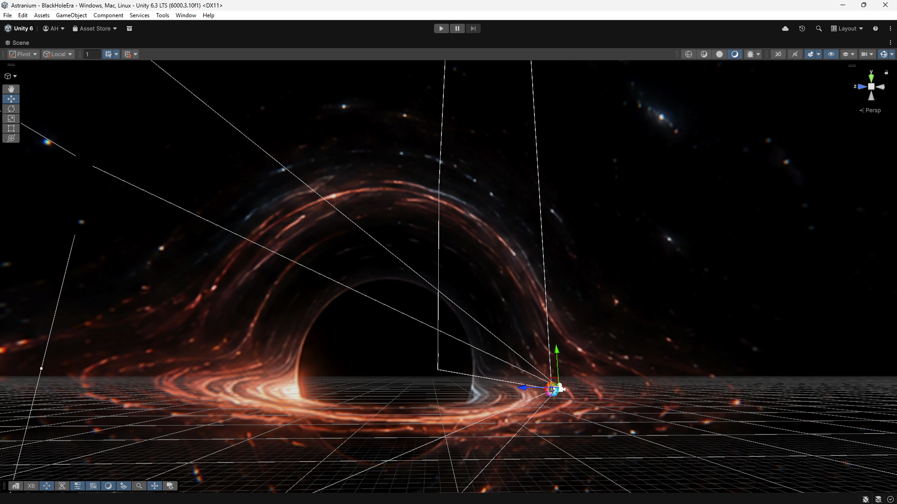
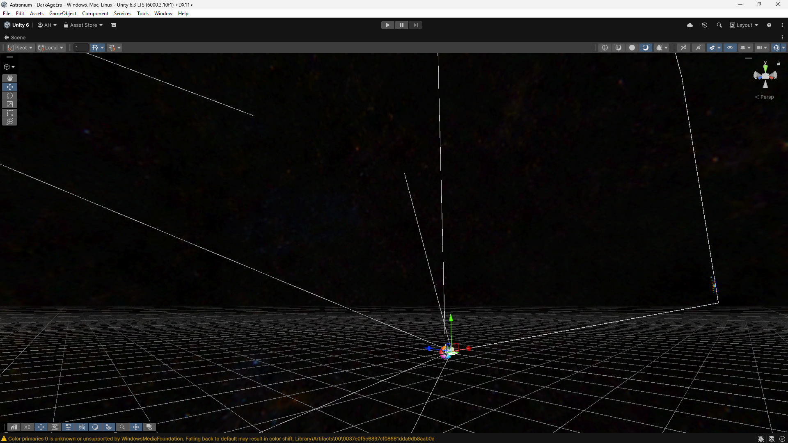

The Five Ages
Inspired by the book The Five Ages of the Universe by Fred Adams and Gregory Laughlin, this project visualises the lifecycle of the cosmos across five distinct eras.

Primordial EraThe Beginning
The Big Bang. Space, time, and matter emerge from a singularity. A primordial inferno that sets the stage for everything that follows.
 Stelliferous Era
Stelliferous Era
The Age of Stars
Stars ignite, galaxies form, and the universe is alive with light. This is the age we inhabit - the era of stellar nurseries and planetary systems.

Degenerate EraThe Dimming
Stars burn out. White dwarfs, neutron stars, and black holes dominate. The universe grows cold as one by one, the lights go out.

Black Hole EraEvent Horizon
Black holes are the last remaining structures. They feast on what little matter remains, slowly evaporating through Hawking radiation over eons.

Dark EraThe Eternal Twilight
Even black holes are gone. Only photons, leptons, and the faintest particles remain. The universe reaches thermodynamic equilibrium - absolute stillness.